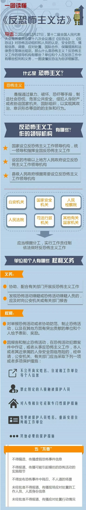

为了使公民面对可能发生的恐怖袭击活动时，采取正确措施规避危险，掌握紧急情况下自救和互救的知识，将危害程度降低到最低，公安部反恐怖局编写《公民防范恐怖袭击手册》。以下摘发部分内容。
常见恐怖袭击手段有哪些？
常规手段：
(1)爆炸。炸弹爆炸、汽车炸弹爆炸、自杀性人体炸弹爆炸等；
(2)枪击。手枪射击、制式步枪或冲锋枪射击等；
(3)劫持。劫持人、劫持车、船、飞机等；
(4)纵火。
非常规手段：
(1)核与辐射恐怖袭击。通过核爆炸或放射性物质的散布、造成环境污染或使人员受到辐射照射；
(2)生物恐怖袭击。利用有害生物或有害生物产品侵害人、农作物、家畜等。如发生在美国9.11事件以后的炭疽邮件事件；
(3)化学恐怖袭击。利用有毒、有害化学物质侵害人、城市重要基础设施、食品与饮用水等。如东京地铁沙林毒气袭击事件；
(4)网络恐怖袭击活动。利用网络散布恐怖袭击、组织恐怖活动、攻击电脑程序和信息系统等。
如何识别恐怖嫌疑人？
实施恐怖袭击的嫌疑人脸上不会贴有标记，但是会有一些不同寻常的举止行为可以引起我们的警惕，例如；
(1)神情恐慌、言行异常者；
(2)着装、携带物品与其身份明显不符，或与季节不协调者；
(3)冒称熟人、假献殷勤者；
(4)在检查过程中，催促检查或态度蛮横、不愿接受检查者；
(5)频繁进出大型活动场所；
(6)反复在警戒区附近出现；
(7)疑似公安部门通报的嫌疑人员。
如何识别可疑车辆？
(1)状态异常。车辆结合部位及边角外部的车漆颜色与车辆颜色是否一致、确定车辆是否改色；车的门锁、后备箱锁、车窗玻璃是否有撬压破损痕迹；如车灯是否破损或异物填塞，车体表面是否附有异常导线或细绳；
(2)车辆停留异常。违反规定停留在水、电、气等重要设施附近或人员密集场所；
(3)车内人员异常。如在检查过程中，神色惊慌、催促检查或态度蛮横、不愿接受检查；发现警察后启动车辆躲避的。
如何识别可疑爆炸物？
在不触动可疑物的前提下：
(1)看。由表及里、由近及远、由上到下无一遗漏地观察，识别、判断可疑物品或可疑部位有无暗藏的爆炸装置；
(2)听。在寂静的环境中用耳倾听是否有异常声响；
(3)嗅。如黑火药含有硫磺，会放出臭鸡蛋(硫化氢)味；自制硝铵炸药的硝酸铵会分解出明显的氨水味等。
爆炸物可能放置在公共场所什么地方？
(1)标志性建筑物或其他附近的建筑物内外；
(2)重大活动场合，如大型运动会、检阅、演出、朝拜、展览等场所；
(3)人口相对聚集的场所，如体育场馆、影剧院、宾馆、运动员村、商场、超市、车站、机场、码头、学校等；
(4)行李、包裹、食品、手提包及各种日用品之中；
(5)宾馆、饭店、洗浴中心、歌舞厅及其易于隐蔽且闲杂人员容易进出的地点；
(6)各种交通工具上；
(7)易于接近且能够实现其爆炸目的的地点。
发现可疑爆炸物怎么办？
(1)不要触动；
(2)及时报警；
(3)迅速撤离。疏散时，有序撤离，不要互相拥挤，以免发生踩踏造成伤亡；
(4)协助警方的调查。目击者应尽量识别可疑物发现的时间、大小、位置、外观，有无人动过等情况，如有可能，用手中的照相机进行照相或录像，为警方提供有价值的线索。
遇有匿名威胁爆炸或扬言爆炸怎么办？
(1)信：要“宁可信其有，不可信其无”，不能心存侥幸心理；
(2)快：尽快从“现场”撤离；
(3)细：细致观察周围的可疑人、事、物；
(4)报：迅速报警、让警方了解情况；
(5)记：用照相机或者摄像机等将“现场”记录下来；
在地铁内发生爆炸怎么办？
(1)迅速按下列车报警按钮，使司机在监视器上获取报警信号；
(2)依靠车内的消防器材进行灭火；
(3)列车在运行期间，不要有拉门、砸窗、跳车等危险行为；
(4)在隧道内疏散时，听从指挥，沉着冷静、紧张有序地通过车头或车尾疏散门进入隧道，向邻近车站撤离；
(5)寻找简易防护物、如衣服、纸巾等捂鼻，采用低姿势撤离。视线不清时手摸墙壁撤离；
(6)受到火灾威胁时，不要盲目跟从人流相互拥挤、乱冲乱摸，要注意朝明亮处，迎着新鲜空气跑；
(7)身上着火不要奔跑，就地打滚或用厚重衣物压灭；
(8)注意观察现场可疑人、可疑物，协助警方调查；
(9)在平时乘坐地铁时要注意熟悉环境，留心地铁的消防设施和安全装置
在大型体育场馆发生爆炸怎么办？
(1)迅速有序远离爆炸现场，避免拥挤、踩踏造成伤亡；
(2)撤离时要注意观察场馆内的安全疏散指示和标志；
(3)场内观众应按照场内的疏散指示和标志从看台到疏散口再撤离到场馆外；
(4)场馆内部体育官员、工作人员以及运动员，应根据沿途的疏散指示和标志通过内部通道疏散；
(5)不要因贪恋财物浪费逃生时间；
(6)实施必要的自救和救助他人；
(7)拨打报警电话,客观详细地描述事件发生、发展经过；
(8)注意观察现场可疑人、可疑物，协助警方调查。
娱乐场所发生爆炸怎么办？
(1)迅速就近隐蔽或者卧倒,就近寻找简易遮挡物护住身体重要部位和器官；
(2)寻找、观察安全出口；
(3)不要用打火机点火照明，以免形成再次爆炸或燃烧；
(4)服从工作人员和专门人员的指挥；
(5)迅速有序撤离现场，避免出现踩踏等事件；
(6)不要因顾及贵重物品而浪费宝贵的逃生时间；
(7)迅速报警，客观详细地向警方描述事件发生、发展的经过；
(8)注意观察现场可疑人、可疑物，协助警方调查。
在宾馆饭店发生爆炸怎么办？
(1)保持镇静,尽快撤离现场，注意避免进入餐厅等存有易燃易爆物品的危险地点；
(2)不盲目跟从人群逃离，避免挤成一团相互踩伤、压伤；
(3)寻找有利地形地物进行隐蔽；
(4)实施自救和互救；
(5)不要因为顾及贵重物品浪费宝贵的逃生时间；
(6)迅速报警，客观详细地向警方描述事件发生、发展的经过；
(7)按照警方和有关人员的示意和指挥及时撤离现场，如果现实条件不允许，就应原地卧倒，等待救援；
(8)注意观察现场可疑人、可疑物，协助警方调查。
在商场与集贸市场发生爆炸怎么办？
(1)保持镇静，迅速选择最近安全出口有序撤离现场；
(2)注意避开临时搭建的货架，避免因坍塌可能造成新的伤害；
(3)注意避开脚下物品，—旦摔倒应设法让身体靠近墙根或其他支撑物；
(4)实施自救和救助他人；
(5)不要因顾及贵重物品而浪费宝贵的逃生时间；
(6)迅速报警，客观详细地向警方描述事件发生、发展的经过；
(7)注意观察现场可疑人、可疑物，协助警方调查。
遇到纵火恐怖袭击怎么办？
(1)熟悉环境，暗记出口。
在陌生的环境里，如入住酒店、商场购物、进入娱乐场所时，为自身安全，要留心疏散通道、安全出口及楼梯方位等，以便需要时能尽快逃离现场；
(2)扑灭小火，惠及他人。
如果发现火势并不大，尚未对人造成很大威胁时，可用消防器材，如灭火器、消防栓等，奋力将小火控制，扑灭；不要惊慌失措地乱叫乱窜，置小火于不顾而酿成大灾；
(3)保持镇静，明辨方向，迅速撤离。
面对浓烟和烈火，要保持镇静，迅速判断危险地点和安全地点，决定逃生的办法，尽快撤离险地；
(4)不入险地，不贪财物。
尽快撤离，不要因害羞或顾及贵重物品，把时间浪费在穿衣或寻找、搬离贵重物品上。已逃离险境的人员，切莫重返险地；
(5)简易防护，捂鼻匍匐。
可用毛巾、口罩捂鼻，匍匐撤离。烟雾较轻飘于上部，贴近地面撤离是避免烟气吸入、滤去毒气的最佳方法。穿过烟火封锁区时，可向头部、身上浇冷水或用湿毛巾、湿棉被、湿毯子等将头和身体裹好，再冲出去；
(6)善用通道，莫入电梯。
要根据情况选择进入相对较为安全的楼梯通道；
(7)火已及身，切勿惊跑。
如果身上着了火，不可跑动或用手拍打，这样会形成风势，加速氧气的补充，促旺火势。当身上衣服着火时，应当赶紧设法脱掉衣服或就地打滚，压灭火苗；及时跳进水中或让人向身上浇水，使用喷灭火器材灭火更有效；
(8)缓降逃生，滑绳自救。
高层、多层公共建筑内一般都设有高空缓降器或救生绳，人员可以通过这些设施安全地离开危险的楼层。如果没有这些专门设施，而安全通道又被堵，救援人员不能及时赶到的情况下，迅速利用身边的绳索或床单、窗帘、衣服等自制简易救生绳，并用水打湿从窗台或阳台沿绳缓滑到下面楼层或地面，安全逃生；
(9)避难场所，固守待援。
假如用手摸房门已感到烫手，此时一旦开门，火焰与浓烟势必迎面扑来。如果逃生通道被切断且短时间内无人救援。这时候，可采取创造避难场所、固守待援的办法：首先应关紧迎火的门窗，打开背火的门窗，用湿毛巾、湿布塞堵门缝或用水浸湿棉被蒙上门窗；然后不停用水淋透房间，防止烟火渗入；固守在房内，直到救援人员到达；
(10)缓晃轻抛，寻求援助。
应尽量呆在阳台、窗口等易于被人发现和能避免烟火近身的地方。在白天，可以向窗外晃动鲜艳衣物，或外抛轻型晃眼的东西；在晚上，可以用手电筒不停地在窗口闪动或者敲击东西，及时发出有效的求救信号，引起救援者的注意。
遇到纵火恐怖袭击“七忌”是什么？
(1)忌惊慌失措。
不可惊慌失措，盲目逃跑或纵身跳楼。要保持冷静，尽快了解所处的环境位置、起火点、起火原因和火势大小，正确选择逃生方法和路线；
(2)忌盲目呼喊。
现代建筑物燃烧时会散发出大量的烟雾和有毒气体，容易造成毒气窒息死亡。可用湿毛巾捂鼻口，匍匐前进逃离，紧急时刻呼叫时也不能移开毛巾；
(3)忌贪恋财物。
不要为穿衣或取贵重物品浪费时间，更不要为入室拿物品而重返火海；
(4)忌乱开门窗。
如房间充满烟雾，必须时，可打开门窗，排放烟雾后，应立即重新关闭好，防止长时间开窗致使外面大量浓烟涌入室内，能见度降低，高温和毒气充斥，无法藏身；
(5)忌乘坐电梯。
一旦着火，电梯就会断电，可能将你困在电梯，无法逃生；
(6)忌随意奔跑。
随意奔跑，不仅容易引火烧身，还会引起新的燃烧点，造成火势蔓延；
(7)忌轻易跳楼。
在房间无法避难时，也不要轻易做出跳楼的决定，此时可扒住阳台或窗台翻出窗外，等待救援。
公共汽车上遇到纵火恐怖袭击怎么办？
(1)沉着冷静。当发动机着火后，应迅速开启车门，从车门下车，用随车灭火器扑灭火；
(2)如果着火部位在中间，从两头车门有秩序地下车。在扑火时，重点保护驾驶室和油箱部位；
(3)如果火焰小但封住了车门，用衣服蒙住头部，从车门冲下；
(4)如果车门线路烧坏，开启不了，应砸开就近车窗翻身下车；
(5)如果衣服着火，来得及脱下，迅速脱下衣服，用脚将火踩灭；或者请他人协助用厚重的衣物压灭火苗，如果他人衣服着火时，脱下自己的衣服或其他布物，将他人身上的火捂灭。
列车上遇到纵火恐怖袭击怎么办？
(1)沉着冷静。不要盲目拥挤、乱冲乱撞，要听从列车人员指挥或广播指引；
(2)利用车厢前后门逃生。被困人员应尽快利用车厢两头的通道，有序逃离；
(3)利用车厢的窗户逃生。可用坚硬的物品将窗户的玻璃砸破，通过窗户逃离现场；
(4)在平坦的路段可采用摘挂钩与着火车厢脱离方法。
客船上遇到纵火恐怖袭击怎么办？
(1)沉着冷静。不盲目跟人乱跑乱撞，赶快自救或互救逃生；
(2)可向客船的前部、尾部和露天板逃离，必要时可利用救生绳、救生梯向水中或来救援的船只上逃离，也可穿上救生衣跳进水中；
(3)如果火势蔓延，封住走道，来不及逃时可关闭房门，不让烟气、火焰侵入。情况紧急时，也可跳入水中；
(4)当客船前部某一楼层着火，还未延烧到机舱时，应先迅速往主甲板、露天甲板逃离；然后，借助救生器材向水中和来救援的船只上及岸上逃生；
(5)当客船上某一客舱着火时，逃出后应随手将舱门关上，以防火势蔓延，并提醒相邻客舱内的旅客赶快疏散；若火势已窜出封住仓内通道时，相邻房间的旅客应关闭靠内走廊房门，从通向左右船舷的舱门逃生；
(6)当船上大火将直通露天的梯道封锁，可以到顶层，施放绳缆，沿绳缆向下逃生。
地下商场中遇到纵火恐怖袭击怎么办？
(1)沉着冷静，识记方位。凡进入地下商场的人员，-定要对其设施和结构布局进行观察，记住疏散通道和安全出口和位置；
(2)迅速撤离，迅速逃离到地面及其他安全区；
(3)灭火与逃生相结合。把初起火势控制在最小范围内，采取-切可能的措施将其扑灭，如-时无法扑灭，应迅速逃离现场；
(4)逃生时，尽量低势前进，不要做深呼吸，可能的情况下用湿衣服或毛巾捂住口和鼻子，防止烟雾进入呼吸道；
(5)万一疏散通道被大火阻断， 应尽量想办法延长生存时间，如可躲入房间，用水泼湿毛巾、衣服等，将门缝塞紧，等待消防队员前来救援。
高层建筑物中遇到纵火恐怖袭击怎么办？
(1)沉着冷静。不能自乱方，乱跑乱撞；
(2)开门前先触摸门锁，若门锁温度很高，应关闭房内所有门窗，用毛巾、被子等堵塞门缝，并泼水降温。同时利用手机等通讯工具向外报警；
(3)不要轻易乘电梯。电梯往往因断电而造成“卡壳”，电梯门直通大楼各层，火场上烟气涌人电梯并极易形成“烟囱效应”，在电梯里随时会被浓烟毒气熏呛而窒息；
(4)不可乱钻、乱躲。高层建筑火灾中千万不可钻到床底下、衣橱内躲避火焰或烟雾，这些都是最危险的地方，又不易被发觉，难以获得及时营救；
(5)利用建筑内部设施，利用普通楼梯、观景楼梯进行逃生；利用阳台、通廊、安全绳等进行逃生；将房间内的床单或窗帘等物品连接起来进行逃生；
(6)根据火场广播逃生：当某一楼层或某—部位火势已经蔓延时，不可盲目行动，要注意听火场消防人员广播和救援疏导信号，选择合适的逃生路线和方法。
公共娱乐场所遇到纵火恐怖袭击怎么办？
(1)保持冷静，辨明安全出口方向。保持清醒，不受混乱人群影响，确定出口方向，迅速逃离；
(2)灵活选择逃生途径。如歌舞厅设在楼层底层，可直接从门和窗口跳出；若设在二楼时，可抓住窗口往下滑；
如设在高层楼房或地下建筑中，则应参照高层建筑或地下建筑的火灾逃生方法逃生；
(3)逃向弱火区等待救援，如果舞厅逃生通道被大火和浓烟封堵，又一时找不到辅助救生设施时，被困人员可暂时逃向火势较弱区间，向窗外发出救援信号，等待消防人员营救；
(4)在逃生中要注意防止中毒。可用水打湿衣服捂住口鼻，若一时叫找不到水，可用饮料代替；逃生行动中，应采用低姿行走，以减少烟气对人体的危害。
当驾车经隧道遇到纵火恐怖袭击怎么办？
(1)沉着冷静，寻找避难所。隧道里设计有避难所或安全通道，要找最近的避难或从最近的安全通道逃离火场；
(2)严禁在车里避难。隧道火灾中火势发展蔓延得很快，不要有侥幸心理，要立即下车逃离，避免不必要的损失。
在地铁内遇到纵火恐怖袭击怎么办？
(1)沉着冷静，及时报警。可以用自己的手机拨打119，也可按稽车车厢内的紧急报警按钮，条件允许时用车厢内灭火器灭火自救；
(2)如果火势蔓延迅速，逃至相对安全的车厢，关闭车厢门，防止蔓延，赢得逃离时间；
(3)列车到站时，听从工作人员指挥撤离；
(4)如停电，可按照应急灯的指示标志有序逃生，注意要朝背离火源的方向逃生；
(5)若车门打不开，可利用身边的物品击打破门。同时将携带的衣物、纸巾沾湿，捂住口鼻，低身逃离；一旦身上着火，可就地打滚或请他人协助用厚重的衣物压灭火苗。
被恐怖分子劫持后怎么办？
(1)保持冷静，不要反抗，相信政府；
(2)不对视，不对话，趴在地上，动作要缓慢；
(3)尽可能保留和隐藏自己的通讯工具，及时把手机改为静音，适时用短信等方式向警方(110)求救，短信主要内容：自己所在位置，人质人数，恐怖分子人数等；
(4)注意观察恐怖分子人数，头领，便于事后提供证言；
(5)在警方发起突击的瞬间，尽可能趴在地上，在警方掩护下脱离现场。
遇到枪击时如何选择掩蔽物？
(1)掩蔽物最好处于自己与恐怖分子之间；
(2)选择密度质地不易被穿透的掩蔽物。如墙体、立柱、大树干，汽车前部发动机及轮胎等；但木门、玻璃门、垃圾桶、灌木丛、花篮、柜台、场馆内座椅、汽车门和尾部等不能够挡住子弹，虽不能作为掩蔽体，但能够提供隐蔽作用，使恐怖分子在第一时间不能够发现你，为下一步逃生提供了时间；
(3)选择能够挡住自己身体的掩蔽物。有些物体质地密度大，但体积过小，不足以完全挡住自己身体，就起不到掩蔽目的。如路灯杆、小树干、消防栓等。
(4)选择形状易于隐藏身体，如立柱；不规则物体容易产生跳弹，掩蔽其后容易被跳弹伤及，如假山、观赏石等。
在公交车上遇到枪击怎么办？
(1)快速掩蔽。在公交车上遇到枪击时，迅速低头隐蔽于前排座椅后或蹲下、趴下，不要站立；
(2)及时报警。拨打110报警：几路车？哪一站？受到哪个方向的枪击，来自车外还是来自车内？是否有人受伤等；
(3)择机下车。在情况不明时，不要下车；确定枪击方向后，下车沿着枪击相反方向，利用车体做掩护快速撤离；
(4)自救互救。到达安全区后，及时检查是否受伤，发现受伤，及时实施自救互救；
(5)事后协助。积极向警方提供现场信息，协助警方控制局面。
在地铁上遇到枪击怎么办？
(1)快速掩蔽。要快速蹲下，尽可能背靠车体，或者趴下，不要随意站起走动；
(2)及时报警。通过每节车厢紧急报警按钮进行报警。
(3)快速撤离。判明情况后，快速撤离到较为安全的车厢内；等车到站后，迅速下车撤离，注意在车门和出站口避免拥挤，听从站台工作人员指挥，按顺序撤出；如果车辆中途停在隧道内，不要急于破窗跳车，以免出现其他伤害；
(4)自救互救。到达安全区后，检查是否受伤，发现受伤及时进行自救互救，等待救援；
(5)事后协助。向警方提供现场信息，协助警方调查。
大型商场遇到枪击怎么办？
(1)快速掩蔽。在大型购物中心遇到枪击时，快速降低身体姿势，利用柜台和衣架躲避，迅速向紧急出口撤离；来不及撤离就近趴下，蹲下或隐蔽于掩蔽物后，等待救援；
(2)及时报警。拨打110报警；
(3)检查伤情。实施自救和互救；
(4)事后协助。向警方提供现场信息，协助警方调查。
在宾馆、饭店或娱乐场所遇到枪击怎么办？
(1)快速掩蔽。要快速趴下或蹲下，隐蔽于桌子、沙发、吧台，立柱等的下面或后面；在室内听到外面枪击声，不要出来观看，及时躲避在沙发或床侧面。不要躲避在门后或衣橱内；
(2)及时报警。拨打110或拨打饭店报警电话报警；
(3)检查伤情。自救互救；
(4)事后协助。向警方提供现场信息，协助警方调查。
在什么情况下可能发生了化学恐怖袭击？
(1)异常的气味。如大蒜味、辛辣味、苦杏仁味等；
(2)异常的现象。如大量昆虫死亡、异常的烟雾、植物的异常变化等；
(3)异常的感觉。一般情况下当人受到化学毒剂或化学毒物的侵害后，会出现不同程度的不适感觉。如恶心、胸闷、惊厥、皮疹等；
(4)现场出现异常物品。如遗弃的防毒面具，桶、罐，装有液体的塑料袋等。
遇到化学恐怖袭击怎么办？
(1)不要惊慌，进一步判明情况。化学恐怖袭击多为利用空气为传播介质，使人在呼吸到有毒空气时中毒。常伴有异常的气味，异常的烟雾等现象；
(2)尽快掩避。利用环境设施和随身携带的物品遮掩身体和口鼻，避免或减少毒物的分割侵袭和吸入；
(3)尽快寻找出口，迅速有序地离开污染源或污染区域，尽量逆风撤离；
(4)及时报警，请求救助。可拨打110、119、120报警；
(5)进行必要的自救互救。采取催吐、洗胃等方法，加快毒物的排出；
(6)听从相关人员的指挥；
(7)配合相关部门做好后续工作。
遇到核与辐射恐怖袭击怎么办？
(1)不要惊慌，进一步判明情况；
(2)尽快有序撤离到相对安全的地方，远离辐射源；
(3)利用随身携带的物品遮掩口鼻，防止或减少放射性灰尘的吸入；
(4)及时报警，请求救助；
(5)听从相关人员的指挥；
(6)配合相关部门做好后续工作。
在什么情况下可能发生了生物恐怖袭击？
(1)事件区发现不明粉末或液体，遗弃的容器和面具，大量昆虫；
(2)微生物恐怖袭击后48～72小时或毒素恐怖袭击几分钟至几小时，出现规模性的人员伤亡；
(3)在现场人员中出现大量相同的临床病例，在一个地理区域出现本来没有或极其罕见异常的疾病；
(4)在非流行区域发生异常流行病；
(5)患者沿着风向分布，同时出现大量动物病例等。
遇到生物恐怖袭击该怎么办？
(1)不要惊慌，尽量保持镇静、判明情况，
(2)利用环境设施和随身携带的物品，遮掩身体和口鼻，避免或减少病原体的侵袭和吸人；
(3)尽快寻找出口，迅速有序地离开污染源或污染区域；
(4)及时报警，请求救助，可拨打110、119、120报警；
(5)听从相关人员的指挥；
(6)不要回家或到人员多的地方，以避免扩大病源污染；
(7)配合相关部门做好后续工作。
在报警时应当注意哪些问题？
(1)保持镇静，不能因为恐慌影响了正常的判断；
(2)判明自己目前是否面临危险，如有危险，做好个人防护，迅速离开危险区域或就地掩蔽；
(3)首先报告最重要的内容，包括地点、时间、发生什么事件、后果等。如枪击事件位置、嫌疑人物、体貌特征、衣着打扮、伤亡人数等；纵火事件说清发生火灾地点，如哪个区、哪条路、哪个住宅区、第几栋楼，几层楼，附近有无危险物等。
紧急撤离危险现场应注意什么？
(1)保持镇静，判明所处位置，及时撤离。
(2)善选通道，不要使用电梯；
(3)迅速撤离，不要贪恋财物，重返危险境地；
(4)防护自身，注意避险；如用物品遮掩身体易受害部分和不靠近窗户玻璃，不要逆着人流前进，以避免被推倒在地；
(5)紧抓固物，巧避藏知，溜边前行。拥挤时，如有可能，要抓住牢靠的东西如楼梯，暂时躲避，待人群过去后迅速离开现场。
紧急情况下如何进行自救互救？
止血：
目的是降低血流速度，防止大量血液流失，导致休克昏迷。具体方法：
①先转移到安全或安静的地方，检查伤势，判断清楚出血性质，如动脉出血、静脉出血、毛细血管出血；
②可采取直接用手指压出在出血伤口上或出血的供血动脉上进行止血；
③对四肢受伤出血的，使用腰带、领带、证件带、粗布条、丝巾，也可将自己衣服撕成条状代替，在大臂上1/3处和大腿中间处进行绑扎止血。
固定：
对骨折、关节受伤的进行固定，目的是避免骨折端对人体造成新的伤害，减轻疼痛和便于搬运抢救。具体方法：
①开放性伤口先包扎伤口再固定，不要送回刺出的骨折端；
②垫高或抬高受伤部分，以减慢流血及减少肿胀。
③对脊柱或怀疑有脊柱损伤的不要移动；
④固定时必须将骨折端上下两个关节一起寄存定，如小腿骨折应将踝、膝再个关节固定。
烧伤急救：
①用大量洁净的水清洗伤口，除非伤口烧黑、变白或太深；
②不要直接用冰敷在伤口；
③不要刺破水泡；
④轻轻除下戒指、手表、皮带或者紧身衣服；
⑤用干净、无粘性的布盖住伤口。
休克急救：
①避免伤者过冷或过热，利用毛毯或大衣保暖；
②若无骨折，伤者双脚抬高30CM左右；
③不要给伤者饮水或者喂食；
④留意伤者的清醒程度
⑤向救护人员报告。
呼吸受阻的急救：
如果您胸部受伤出现呼吸障碍，维护胸腔压力与外界大气压的压力差，是保障呼吸能够顺畅的关键。具体方法：
①可使用身份证或其他非吸水性卡片贴住身体压住伤口；
②也可以使用保鲜膜类的薄膜，撕下约20×20CM大小，贴住伤口，用胶带固定住上、左、右三个边，留出下方，以便让伤口流出的血水排出；
③也可以张开手掌紧贴身体压住伤口。
腹部受伤的急救：
①止血。如果是闭合性伤口，应及时压住伤口，进行止血；
②保鲜。如果是开放性伤口，小肠外露时，应用水打湿上衣，包住小肠，不使其外露于空气中，避免细菌感染，失水干燥坏死。千万不要把沾染污物的内脏回填腹腔，这样会使内脏在腹内相互感染，产生粘联，加速内脏坏死；
③等待救援。受伤后尽量不移动，采取卧或平躺姿势等待救援。
心肺复苏：
①一拍、二按、三呼叫。抢救者将伤员抑卧，立即拍打其双肩并呼叫，也可以同时压人中穴并呼叫。如没有反应，判定此人神志丧失；
②人工呼吸。抬下颌角使呼吸道畅通无阻；如果受伤者仍不能呼吸，进行口对口的人工呼吸。如果上述人工呼吸不能起作用，要检查嘴和咽喉是否有异物，并设法排除，继续进行人工呼吸；
常用的人工呼吸方法主要有：口对口人工呼吸、口对鼻人工呼吸、仰卧压胸法或俯卧压胸法人工呼吸等。其中以口对口人工呼吸最有效。
口诀是：头部后仰向后推，紧托下颌向上提。深吸口气嘴对嘴，有时需嘴对鼻。注意捏鼻把气吹，每分钟16~18次。
③心脏按摩。一旦发现病人心脏停跳，立即在患者心前区胸骨体上急速叩击2~3次，若无效，则立即进行胸外心脏按摩。
方法是： 先让患者仰卧，背 部垫上一块硬木板，或者将患者连同床褥移到地上，操作者跪在患者身旁，用手掌根部放在患者胸骨体的中、下1/3交界处，另一手重叠于前手的手背 上，两肘伸直，借操作者体重，急促向下压迫胸骨，使其下陷3CM(对于儿童患者所施力量要适当减少)然后放松，使胸骨复位，如此反复进行，每分钟约70~80次。按摩时不可用力过大或部位不当，以免引起肋骨骨折。胸外心脏按摩如不能有效进行气体交换，则要同时配合人工呼吸。
在公共场所有哪些“保护神”？
公共场所一般都有完善的防火，灭火设施和紧急出口：
(1)在公共场所部位，均有红底黄字的"报警开关"标志，箭头指向位置即按钮位置，下推为报警电话；
(2)走廊配有干粉灭火器箱，上面贴有红色"灭火器"标志；
(3)楼层内设有事故照明灯，可见清晰的"紧急出口"标志；
(4)在走廊或者楼梯，有消防栓，附近配有消防带。切记：处在陌生的环境时，如入住酒店、商场购物、进入娱乐场所时，务必留心疏散通道、灭火设施和紧急出口及楼梯方位等，以便关键时候能尽快逃离现场。
如何从租住房屋人员中发现嫌疑人？
(1)昼伏夜出，作息时间反常；
(2)房屋内有异常声响、气味；
(3)常出现非生活垃圾；
(4)交往复杂、异常
(5)常携带异常物品出入。
在租住人员中发现可疑人后怎么办？
(1)保持镇静，不要引起对方警觉；
(2)迅速报警，直接拨打110，反映可疑情况；
(3)尽可能记住嫌疑人及交往人员体貌特征；
(4)做好自身保护，避免被可疑人发觉，影响自身安全。 |